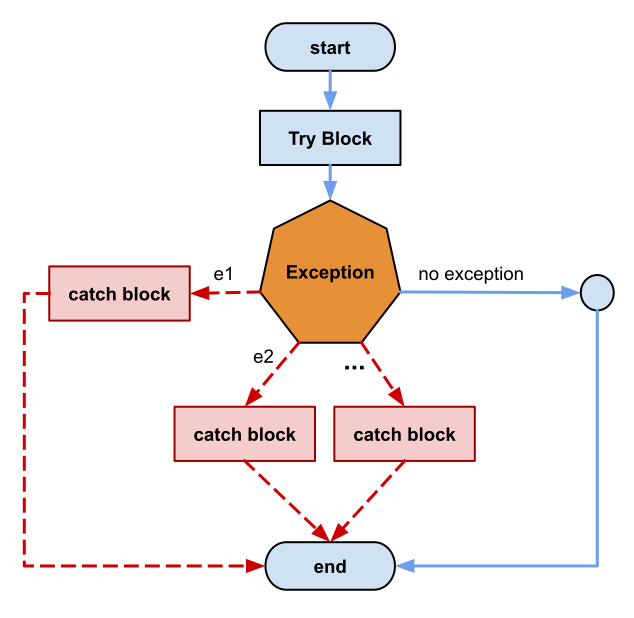

index<--
C++ Exceptions
There is a new capability of C++ that is not available in C, called exception.
It represents an unusual situation that apears during program execution.
There are two kind of exceptions: system predefined and user defined.
We deal with exceptions to improve code reliability.
Exception Handling
When an exception is encontered, the program will intrerupt its notmal workflow and jump to a different place. There is a new "control flow" statement created for handling exceptions. Let's study the workflow:

try-catch workflow
Syntax:
try {
// protected code
} catch( ExceptionName e1 ) {
// catch block
} catch( ExceptionName e2 ) {
// catch block
} catch( ExceptionName eN ) {
// catch block
} catch(...) {
// catch any other exception
}
Missing Feature:
If you are Java programmer you may know there is a "finally" block in "try" statement.
Oh well, this is not implemented by C++ standard.
This is maybe an inconvenient for developers who try to create safer code.
We can argue why this feature is missing using Twitter.
Wait a second. C++ do not have "finally" block in "try-catch" statement? This is ridiculous. But why?@cppchat @include_cpp #cpp
— Elucian Moise (@elucian_moise) November 19, 2020
Go back to: C++ Tutorial